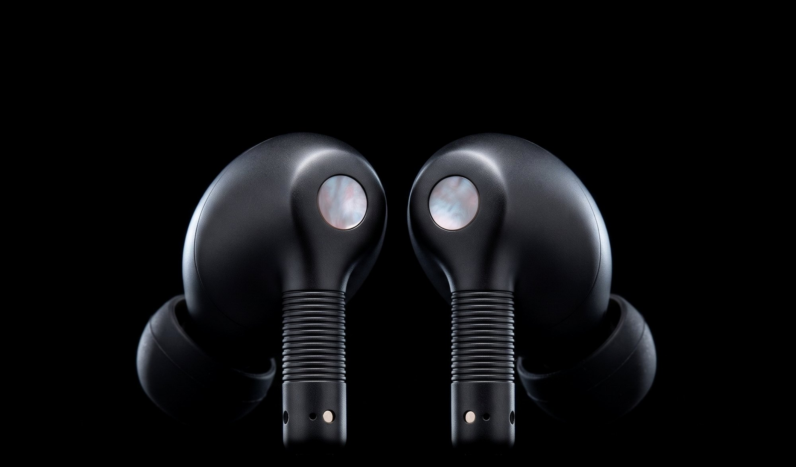
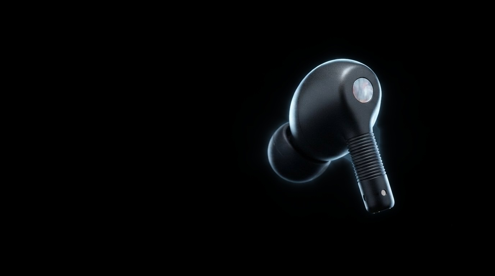
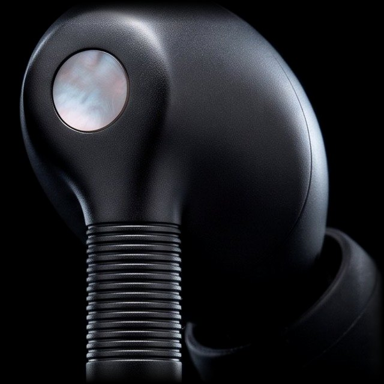
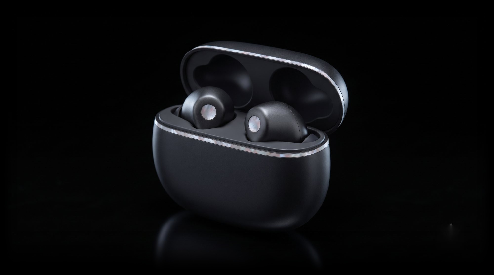

Nácar Onda
The world,
turned down.
Cancels up to 3x more noise than our previous earbuds.
Meet Nácar Onda. Our most effective noise cancellation yet, run by a chip that answers every sound around you with its exact opposite. Softer, deeper-sealing tips close the gaps other earbuds leave open, and six beam-forming microphones keep your voice clear on the loudest street. On the outside, a disc of polished mother-of-pearl marks each bud. Nácar, after all, means pearl.
Cancels up to
3x more
low-frequency noise than our previous earbuds
Retunes itself
48,000
times a second as the world around you changes

Adaptive Noise Cancellation
The city fades.
The song stays.
Every sound meets
its opposite.
Onda plays a precise mirror image of everything it hears. The two waves meet and cancel, and what reaches your ear is close to silence.
Sound that stays put
when you turn your head.
Custom driver
11 mm
with a low-distortion amplifier for deep, clean bass
Spatial audio
360°
with head tracking that anchors a film to your screen
Lossless, up to
96 kHz
24-bit from a paired Nácar Faro
The grooves are
the remote.

-
Squeeze
Play, pause or answer a call. Twice to skip ahead.
-
Slide
Run a finger along the grooves to raise or lower the volume.
-
Hold the pearl
Touch and hold the disc to move between Noise Cancellation, Adaptive and Transparency.
Forty hours.
One pocket.
Per charge
8 h
of listening with noise cancellation on
With the case
40 h
in total, topped up by USB‑C or wireless
Quick charge
5 min
in the case gives about an hour of play
Earbuds and case
IP57
dust, sweat and water resistant
Nácar Onda
Your quiet
is ready.
Two buds and a pebble of a case that closes on a thin seam of mother-of-pearl. ₹24,900 or ₹2,075/mo. for 12 mo.
